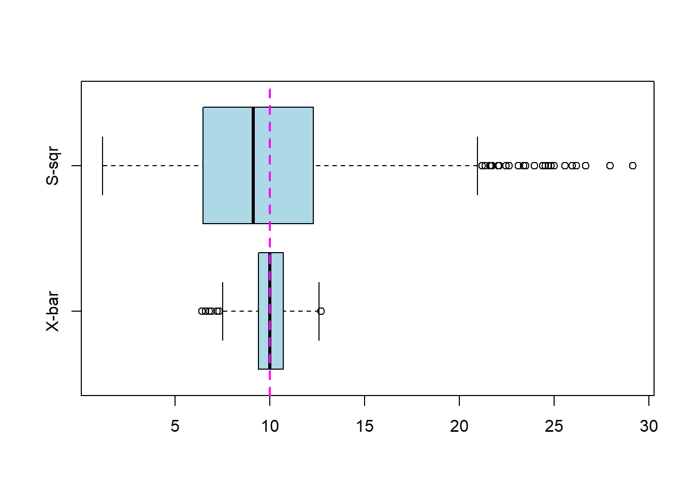

Last updated: 2018-08-14
workflowr checks: (Click a bullet for more information) ✔ R Markdown file: up-to-date
Great! Since the R Markdown file has been committed to the Git repository, you know the exact version of the code that produced these results.
✔ Environment: empty
Great job! The global environment was empty. Objects defined in the global environment can affect the analysis in your R Markdown file in unknown ways. For reproduciblity it’s best to always run the code in an empty environment.
✔ Seed:
set.seed(20180730)
The command set.seed(20180730) was run prior to running the code in the R Markdown file. Setting a seed ensures that any results that rely on randomness, e.g. subsampling or permutations, are reproducible.
✔ Session information: recorded
Great job! Recording the operating system, R version, and package versions is critical for reproducibility.
✔ Repository version: cf18640
wflow_publish or wflow_git_commit). workflowr only checks the R Markdown file, but you know if there are other scripts or data files that it depends on. Below is the status of the Git repository when the results were generated:
Ignored files:
Ignored: .Rhistory
Untracked files:
Untracked: data/PTweight.txt
Untracked: data/invadopodia.txt
Untracked: data/tasmania.csv
Untracked: docs/figure/
| File | Version | Author | Date | Message |
|---|---|---|---|---|
| Rmd | cf18640 | Denny Shin | 2018-08-14 | added week 3 and week 4. Edited some things in index and week 2 |
To construct CI we use inverse distribution functions.
p=0.975
qnorm(p)[1] 1.959964qnorm(p, 5, 3) # N(5,3^2)[1] 10.87989qt(p, 5) # t-dist with 5 degrees of freedom[1] 2.570582qchisq(p, 5) # chisq with 5 degrees of freedom[1] 12.8325qf(p, 12, 4) # F dist[1] 8.751159To read .txt files:
PTweight <- read.table("data/PTweight.txt")To find CI:
x <- PTweight[1:5, 2] # control values
t.test(x, conf.level = 0.9) # 90% CI
One Sample t-test
data: x
t = 3.47, df = 4, p-value = 0.02558
alternative hypothesis: true mean is not equal to 0
90 percent confidence interval:
189.0001 791.1999
sample estimates:
mean of x
490.1 y <- PTweight[6:10, 2]
t.test(x, y, var.equal = TRUE) # two means, unknown sigma, common sigma
Two Sample t-test
data: x and y
t = -1.4394, df = 8, p-value = 0.188
alternative hypothesis: true difference in means is not equal to 0
95 percent confidence interval:
-662.5751 153.2951
sample estimates:
mean of x mean of y
490.10 744.74 Here we assumed that the variance of x and y are common. Is this a reasonable assumption?
var.test(x,y)
F test to compare two variances
data: x and y
F = 1.7583, num df = 4, denom df = 4, p-value = 0.598
alternative hypothesis: true ratio of variances is not equal to 1
95 percent confidence interval:
0.183065 16.887192
sample estimates:
ratio of variances
1.758253 Here, the ratio of \(\sigma_x\) and \(\sigma_y\): \(\sigma_x / \sigma_y =1\) is inside the CI. There is not enought evidence to suggest that variances are UNEQUAL. In other words, it IS reasonable to assume that the variances of x and y are common.
Let’s follow the example.
lambda <- 10
B <- 1000 # simulation no.
n <- 10 # sample size
xbar <- 1:B # initialise a vector for xbar and s2
s2 <- 1:B
for (b in 1:B){
x <- rpois(n, lambda) # 10 random samples from poisson
xbar[b] <- mean(x)
s2[b] <- var(x)
}Let’s do some statistics:
mean(xbar)[1] 10.0126mean(s2)[1] 9.795933var(xbar)[1] 0.9930943var(s2)[1] 20.7507Here, we find: \(E(\bar{X})\), \(E(S^2)\), \(var(\bar{X})\), \(var(s^2)\)
We can clearly see that \(\bar{X}\) is the superior estimator. Let’s also look at the boxplots:
boxplot(xbar, s2, names = c("X-bar", "S-sqr"), col = "lightblue", horizontal = TRUE)
abline(v = lambda, lty = 2, lwd = 2, col = "magenta") # draw a dashed vertical line
\(\bar{X}\) clearly has less spread. They are both centered around 10.
invadopodia <- read.table("data/invadopodia.txt")Looking at the text file, there are 2 col “Condition” and “Total”.
We can much more easily parse through the file without using row numbers like this:
# condition = 1 is no treatment
x1 <- invadopodia[invadopodia$Condition == 1, 2] # all rows with Condition == 1 and col 2
x2 <- invadopodia[invadopodia$Condition == 2, 2] # isopropile treatment
n <- length(x1)
m <- length(x2)
xbar1 <- mean(x1)
xbar2 <- mean(x2)Recall that using \(\bar{X}\) as the estimator for \(\lambda\) in Poisson follows \(N(\lambda,\lambda/n)\). So we can find 95% CI:
xbar1 + c(-1,1)*1.96*sqrt(xbar1/n)[1] 4.871097 6.684459xbar2 + c(-1,1)*1.96*sqrt(xbar2/m)[1] 3.057910 4.293441The CI do NOT overlap, meaning that the two means are likely to be different. We can do difference of mean technique like before:
xbar1 - xbar2 +c(-1,1)*1.96*sqrt(xbar1/n + xbar2/m)[1] 1.004967 3.199237Here we see that the CI of the difference of the two estimators does NOT contain zero. So it is reasonable to assume that they have different means.
I tried using z.test() function but it says “could not find function z.test”???
We can do simple discrete simulations using the sample() function.
sample(c("tails","heads"), 10, replace=TRUE) # tossing a coin 10 times [1] "heads" "heads" "tails" "tails" "heads" "heads" "heads" "tails"
[9] "tails" "tails"The default is to sample WTIHOUT REPLACEMENT, so we need to amend this every time if we want.
Default setting is to give equal probability. We can change this:
sample(c("tails","heads"), 10, prob=c(0.2, 0.8), replace=TRUE) [1] "heads" "heads" "heads" "heads" "heads" "heads" "tails" "heads"
[9] "heads" "tails"This is referring to the invadopodia data.
x3 <- invadopodia[invadopodia$Condition == 3, 2] # propile
x4 <- invadopodia[invadopodia$Condition == 4, 2] # isopropile and propile
n <- length(x3)
m <- length(x4)
xbar3 <- mean(x3)
xbar4 <- mean(x4)
# 95% CI for lambda3 and lambda4
xbar3 + c(-1,1)*1.96*sqrt(xbar3/n)[1] 4.537680 6.195654xbar4 + c(-1,1)*1.96*sqrt(xbar4/n)[1] 3.238796 4.661204propile treatment is condition 3 and combo treatment is condition 4. We can compare the means of the two. From Q1 is can guess that the means could be similar since the CIs overlap. To be sure let’s do a difference of means calculation.
xbar3 - xbar4 + c(-1,1)*1.96*sqrt(xbar3/n + xbar4/m)[1] 0.3839142 2.4494191From this analysis we see that zero is NOT included in CI. Therefore, we can say that the means are different but only slightly.
COX2 data again:
x <- c(10.39, 10.43, 9.99,11.17,8.91,11.20,11.38,7.74,10.61,11.11)
xbar <- mean(x)
s <- sd(x)These are from a normal dist, single mean, unknown \(\sigma\). So we use t-dist
t.test(x, conf.level = 0.75)
One Sample t-test
data: x
t = 28.081, df = 9, p-value = 4.477e-10
alternative hypothesis: true mean is not equal to 0
75 percent confidence interval:
9.842278 10.743722
sample estimates:
mean of x
10.293 theta = 0.6
n = 10
B = 1000 # 1000 simulations
xbar = 1:B
s2 = 1:B
for (b in 1:B) {
x <- sample(c(0,1,2), n, prob = c(1-theta, 3*theta/4, theta/4), replace = TRUE)
xbar[b] <- mean(x)
s2[b] <- var(x)
}Now, we can see that the expected value for our estimator \(\bar{X}\) is:
mean(xbar)[1] 0.759However, if we use \(T_1 = 4\bar{X}/5\)
mean(4*xbar/5)[1] 0.6072we can see that this is much less biased. It is safe to say that it is unbiased.
For \(T_2\) I first do the indicator function.
counts <- 1:B
for (b in 1:B) {
x <- sample(c(0,1,2), n, prob = c(1-theta, 3*theta/4, theta/4), replace = TRUE)
count <- 0
for (i in 1:n) {
if (x[i]==0) {
count <- count + 1
}
}
counts[b] <- count
}We can see that with just the indicator function, its expected value is \(10(1-\theta)\)
mean(counts)[1] 4.014To adjust, we do:
mean(1-(1/n)*counts)[1] 0.5986which is unbiased.
To compare the variances:
((4/5)^2)*var(xbar)[1] 0.03205702((1/10)^2)*var(counts)[1] 0.0244625It seems that the \(T_2\), using the indicator function, is a better estimator for the pmf.
sessionInfo()R version 3.5.0 (2018-04-23)
Platform: x86_64-w64-mingw32/x64 (64-bit)
Running under: Windows 10 x64 (build 17713)
Matrix products: default
locale:
[1] LC_COLLATE=English_Australia.1252 LC_CTYPE=English_Australia.1252
[3] LC_MONETARY=English_Australia.1252 LC_NUMERIC=C
[5] LC_TIME=English_Australia.1252
attached base packages:
[1] stats graphics grDevices utils datasets methods base
other attached packages:
[1] knitr_1.20
loaded via a namespace (and not attached):
[1] workflowr_1.1.1 Rcpp_0.12.18 digest_0.6.15
[4] rprojroot_1.3-2 R.methodsS3_1.7.1 backports_1.1.2
[7] git2r_0.23.0 magrittr_1.5 evaluate_0.11
[10] stringi_1.1.7 whisker_0.3-2 R.oo_1.22.0
[13] R.utils_2.6.0 rmarkdown_1.10 tools_3.5.0
[16] stringr_1.3.1 yaml_2.1.19 compiler_3.5.0
[19] htmltools_0.3.6 This reproducible R Markdown analysis was created with workflowr 1.1.1